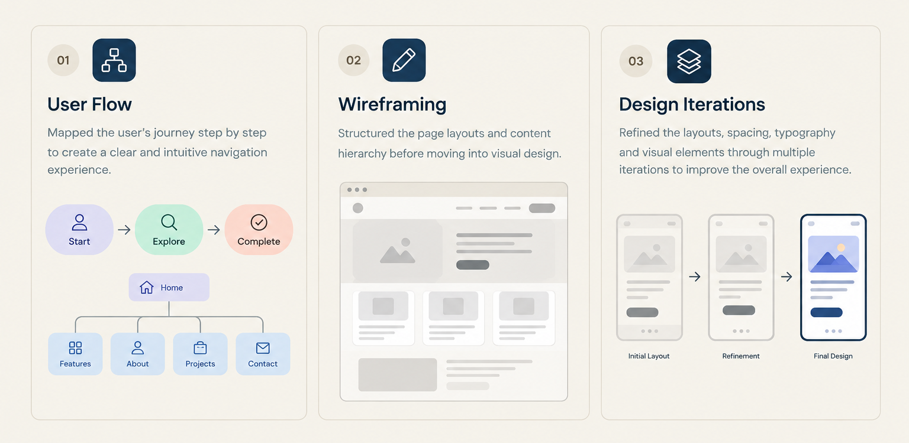

CASE STUDY / WEB DESIGN
Project title.
Use this case-study page to explain the challenge, your approach, and the final experience.
Your project
goes here.
01 / THE CHALLENGE
What needed to be solved?
Describe the user problem, business goal, or opportunity that started this project. Be specific about who the experience is for and what they needed to accomplish.
02 / THE APPROACH
How I approached it.
I followed a structured process of research, user flows, wireframes and design iterations to turn the idea into a clear, functional and user-friendly experience.

02 / THE SOLUTION
A clearer experience.
Show your final screens and explain how the design choices help users. Replace this text with the real outcome and any feedback or results you can share.
03 / REFLECTION
What I learned.
Share one or two honest takeaways: what worked, what you would improve next, or what the project taught you about designing for people.